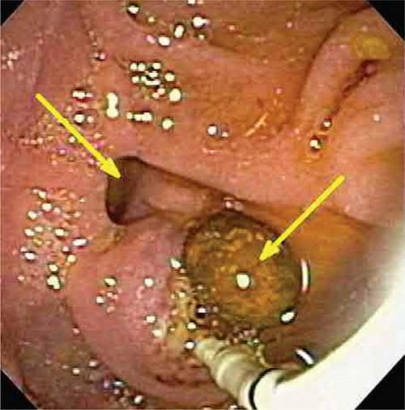
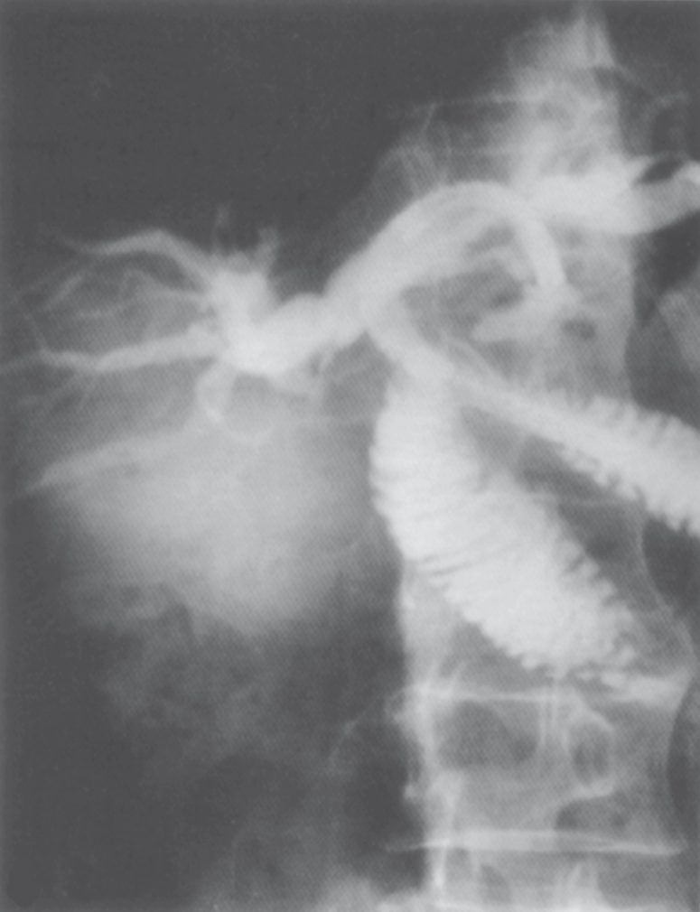

Cholangitis
Summary
- Acute cholangitis is an ascending bacterial infection of the biliary tree that develops secondary to obstruction and increased intraluminal pressure, most commonly caused by choledocholithiasis [1].
- First described by Jean Martin Charcot in 1877, it classically presents with the triad of fever, jaundice and right-upper-quadrant pain, though this is present in fewer than half of patients [1][2].
- Untreated, cholangitis can progress to septic shock with altered mental status (Reynolds pentad), which carries a mortality approaching 100% without prompt treatment, making biliary decompression a surgical emergency in severe cases [1].
Definition
Cholangitis is infection and inflammation of the bile ducts arising from bacterial colonisation of stagnant, obstructed bile, with ascending spread into the biliary tree and, in severe cases, the bloodstream [1][3]. It differs from simple bile duct obstruction (e.g. by a stone) in that infection is superimposed on the obstruction, converting a mechanical problem into a life-threatening septic one [4].
Pathophysiology
- Biliary obstruction causes bile stasis, providing an environment for bacterial colonisation and ascending infection of the biliary tree [1][4].
- Bactibilia can be identified in up to 90% of patients with an obstructing stone [1].
- The most common pathogens are Klebsiella, E. coli, Enterobacter, Pseudomonas and Citrobacter species [1]; typically Gram-negative organisms such as E. coli and Pseudomonas predominate [4].
- Hepatocellular injury from infection and inflammation elevates serum transaminases and alkaline phosphatase.
- Untreated, the infection can progress to septic shock with mental status changes and hypotension (the Reynolds pentad) an ominous sign associated with near-uniform mortality without prompt treatment [1].
- Complications include stricture formation and hepatic abscess as late sequelae [5].
Clinical features
- The classic Charcot triad (fever (often with rigors), right-upper-quadrant or epigastric pain, and jaundice) is present in less than 50% of patients, with jaundice the least common of the three findings [1][2].
- Leukocytosis with an abnormal liver panel is more consistently found than the full clinical triad [1].
- Progression to hypotension and altered mental status (Reynolds pentad) signals septic shock [1][6].
- On examination the patient is febrile and icteric, with epigastric and right hypochondrial tenderness [2].
- Older patients may present atypically with episodic pain, fever and jaundice without a full clinical picture [5].
Etiology
- Any obstructing process of the biliary tree can precipitate ascending cholangitis, but choledocholithiasis is by far the most common cause [1].
- Other causes include malignant biliary obstruction (cholangiocarcinoma, pancreatic head cancer, ampullary tumours), benign biliary strictures (post-surgical, from primary sclerosing cholangitis, or chronic pancreatitis), Mirizzi syndrome, choledochal cysts, indwelling biliary stents or percutaneous transhepatic catheters, and instrumentation of the biliary tree (e.g. after ERCP, or via a prior biliary-enteric anastomosis exposing the ducts to enteric organisms) [1][3][4].
- A compelling reason to treat choledocholithiasis promptly is that the risk of developing cholangitis is upward of 5% in admitted patients with duct stones [1].
Diagnosis
- Ultrasound is the first screening test and commonly shows biliary dilation, though it may not localise the level of obstruction [1].
- HIDA scans should be interpreted cautiously because infection reduces hepatic secretion of the tracer [1].
- Liver function tests and ultrasound are the initial investigations, with MRCP used to define the nature and level of obstruction [2].
- The most valuable diagnostic and therapeutic modalities are direct cholangiography via ERCP or percutaneous transhepatic cholangiography (PTC) [1].
- Laboratory findings include leukocytosis and a cholestatic liver panel with elevated ALP and bilirubin [1].


Scoring and Severity
- Management is guided by disease severity.
- Mild acute cholangitis usually responds to antibiotics alone, though there should be a low threshold for biliary drainage if the patient fails to improve.
- Moderate cholangitis requires early duct clearance by endoscopic or percutaneous techniques.
- Severe cholangitis (with organ dysfunction, i.e. approaching the Reynolds pentad) requires haemodynamic and respiratory stabilisation followed by prompt biliary drainage [1].
Treatment and Management
- Once cholangitis is suspected, adequate hydration, correction of coagulopathy, exclusion of diabetes, and broad-spectrum antibiotics should be started promptly [2].
- Rehydration and intravenous antibiotics are instituted immediately, with the severity of disease then assessed to guide the timing of drainage [1].
- Most patients improve with medical therapy and endoscopic or percutaneous biliary drainage; if these are unavailable or unsuccessful, surgical drainage via common bile duct exploration with T-tube placement is performed, though this is now rarely required [1][2].
- Definitive treatment of the underlying cause (e.g. cholecystectomy for gallstone disease) is deferred until the patient is stabilised, the septic episode is treated, and the diagnosis is confirmed [1].
Once relief of obstruction is required, endoscopic papillotomy/sphincterotomy is the preferred technique, followed by stone removal with a Dormia basket, or placement of a stent or nasobiliary drain for flushing if stone removal is not possible. If endoscopic drainage fails, PTC drainage can be performed, with subsequent percutaneous choledochoscopy [2].

Surgeries
- Surgery for cholangitis is now rarely used given the effectiveness of minimally invasive drainage.
- When required, choledochotomy is performed via laparotomy: the common bile duct is opened longitudinally, stones are removed, on-table choledochoscopy confirms clearance, and a T-tube is placed with the duct closed around it, the long limb brought out to allow external bile drainage [2].
- Once bile drains clear and the patient recovers, a cholangiogram is performed; if residual stones remain, the T-tube tract is allowed to mature over roughly 6 weeks so that a radiologist can perform percutaneous stone extraction along the tract (the Burhenne technique) [2].
- For recurrent pyogenic cholangitis (Oriental cholangiohepatitis/hepatolithiasis), definitive surgery aims to remove all stones, bypass or resect strictures, and provide durable biliary drainage; intrahepatic strictures may require resection, strictureplasty, or hepaticojejunostomy, with the Roux limb sometimes brought out as an accessible stoma for future choledochoscopy [8].

Complications
- Untreated or inadequately treated cholangitis can progress to septic shock and multi-organ failure via the Reynolds pentad, with near-uniform mortality if unaddressed [1].
- Pus may accumulate within the biliary tree, and hepatic (pyogenic) abscesses may develop as a direct consequence of ascending cholangitis, particularly with biliary tract obstruction from stones or malignancy [2][8].
- Stricture formation and hepatic abscess are recognised late complications of recurrent cholangitis [5].
- Recurrent episodes, as seen in recurrent pyogenic cholangitis, can progress to secondary biliary cirrhosis and carry an increased risk of cholangiocarcinoma [8].
Prognosis
- With prompt recognition, antibiotics and timely biliary decompression, most patients with mild-to-moderate cholangitis respond well.
- Severe cholangitis with the Reynolds pentad is an ominous presentation with a very high mortality if treatment is delayed [1].
- In recurrent pyogenic cholangitis, surgical management directed at stone clearance and adequate drainage is highly successful in the absence of malignant transformation, though the chronicity of infection and inflammation places patients at long-term risk of cholangiocarcinoma [8].
References
- Sabiston Textbook of Surgery, 22nd ed., Ch. 88
- Bailey & Love's Short Practice of Surgery, 28th ed., Ch. 71
- Browse's Introduction to the Symptoms and Signs of Surgical Disease, 6th ed., Ch. 15
- Oxford Handbook of Clinical Surgery, 5th ed., Ch. 9
- The ABSITE Review, 2022
- Schwartz's Principles of Surgery: ABSITE and Board Review, Ch. 32
- Maingot's Abdominal Operations, 13th ed., Ch. 63
- Sabiston Textbook of Surgery, 22nd ed., Ch. 89